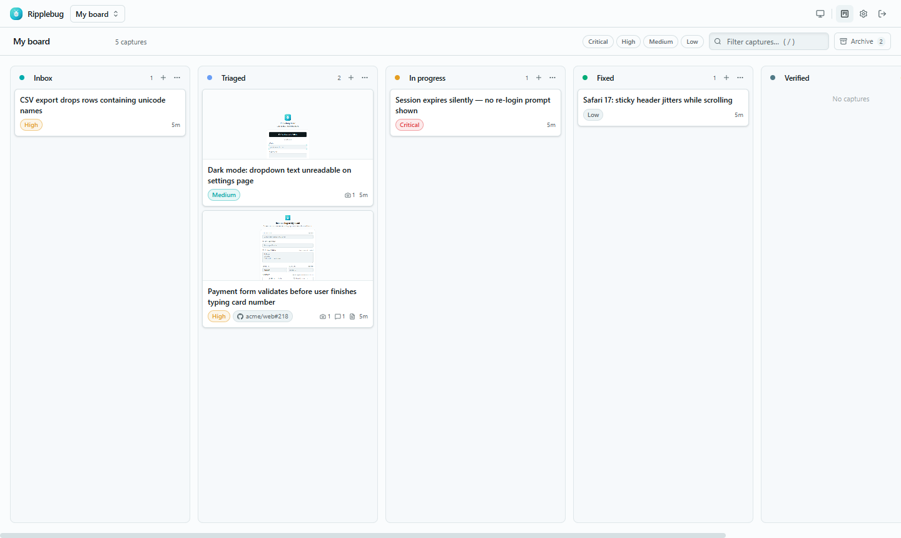
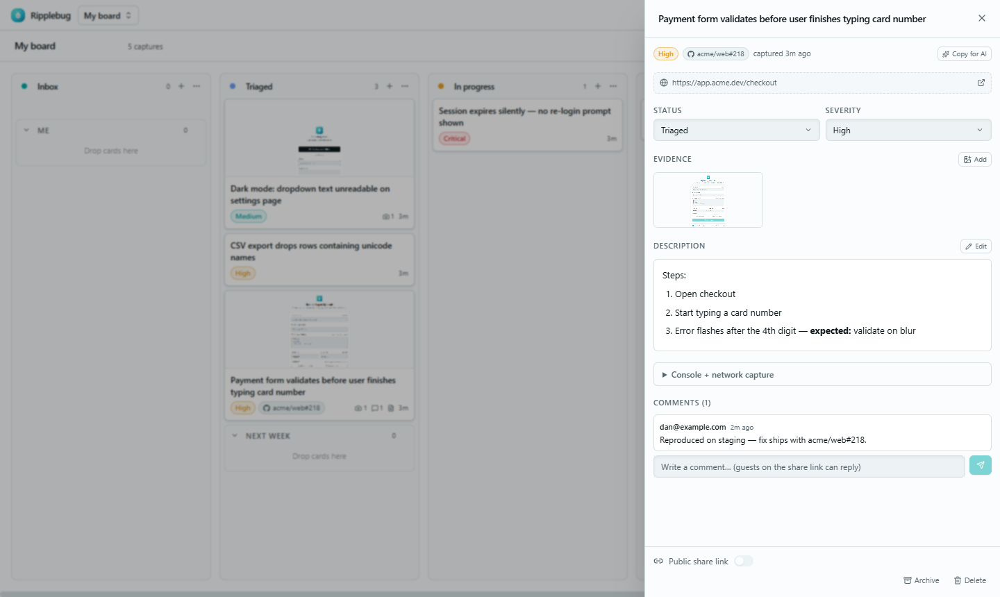
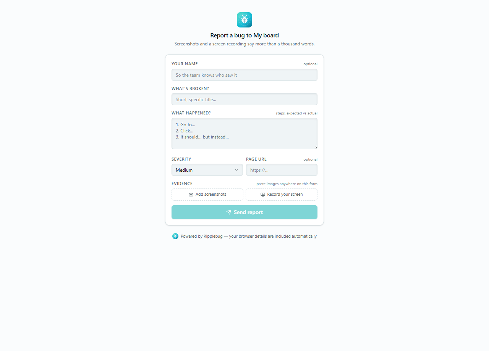

One report — seven destinations

The whole story, attached automatically
Every report carries what an engineer actually needs to fix it.
One-click capture
Screenshot on open, region crop, annotate with arrows, boxes and redaction. Record the tab or screen for up to 60s.
Console + network, always
The last 200 console messages and 100 requests ride along as a tidy Markdown file. No DevTools, no debugger banner.
Files where your team works
Azure DevOps, GitHub, Jira, Linear, GitLab, Trello — each with its native fields. Slack & Teams get the summary.
A live triage board
Every capture becomes a draggable card: columns, sub-groups, comments, archive — updating in real time for everyone.
Copy for AI
Turn any capture into a paste-ready debugging prompt — steps, console, network, environment — for Claude, Cursor, or any tool.
Your tokens stay yours
Tracker credentials live in your browser, not on our servers. The extension has no analytics and no middleman.
Open a card, see everything.
The evidence, the repro steps, the console — plus a comment thread where guests on a share link can reply. Ask "can you retest?" and the answer lands on the ticket, not in a DM.
- Edit descriptions inline, paste images straight onto the card
- Export to a tracker with one click — the link badges back
- Public share pages for anyone, no account needed

Testers report through a link.
No install. No account.
Send anyone your guest link — they describe the bug, paste screenshots (with a full annotation editor), even record their screen in the browser. Their browser and viewport details attach automatically.
- Reports land in your Inbox in real time, tagged with who sent them
- Rate-limited and revocable — regenerate the link any time
- Perfect for clients, QA rounds, and beta testers

Your next bug report takes one click.
Free extension. Free board. Two minutes to set up.